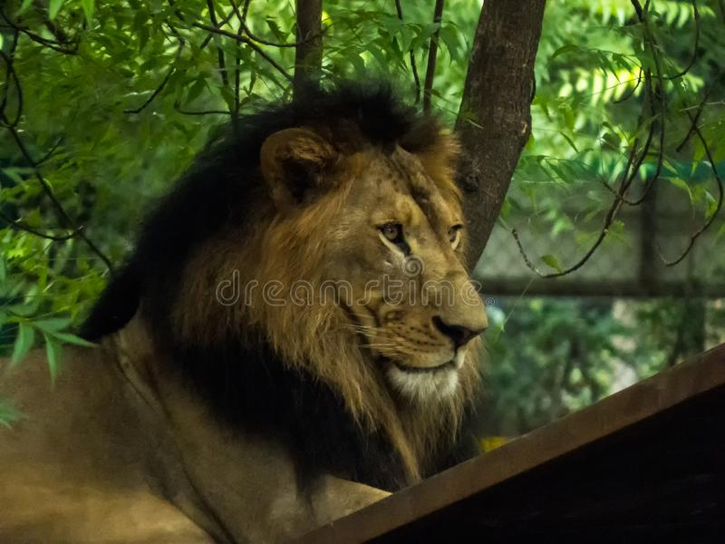
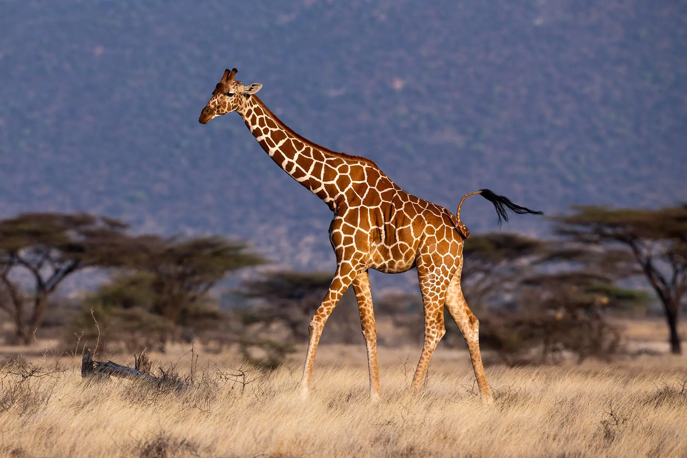

Tiger

The tiger (Panthera tigris) is the largest living cat species and a member of the genus Panthera. It is most recognisable for its dark stripes on orange fur with a white underside. An apex predator, it primarily preys on ungulates, such as deer and wild boar. It is territorial and generally a solitary but social predator, requiring large contiguous areas of habitat to support its requirements for prey and rearing of its offspring. Tiger cubs stay with their mother for about two years and then become independent, leaving their mother's home range to establish their own.
Lion
The lion (Panthera leo) is a large cat of the genus Panthera native to Africa and India. It has a muscular, broad-chested body; short, rounded head; round ears; and a hairy tuft at the end of its tail. It is sexually dimorphic; adult male lions are larger than females and have a prominent mane. It is a social species, forming groups called prides. A lion's pride consists of a few adult males, related females, and cubs. Groups of female lions usually hunt together, preying mostly on large ungulates.
Fox

Foxes are small to medium-sized, omnivorous mammals belonging to several genera of the family Canidae. They have a flattened skull, upright, triangular ears, a pointed, slightly upturned snout, and a long bushy tail (or brush). Twelve species belong to the monophyletic "true foxes" group of genus Vulpes. Approximately another 25 current or extinct species are always or sometimes called foxes; these foxes are either part of the paraphyletic group of the South American foxes, or of the outlying group, which consists of the bat-eared fox, gray fox, and island fox.[1]
Giraffe
The giraffe is a large African hoofed mammal belonging to the genus Giraffa. is the tallest living terrestrial animal and the largest ruminant on Earth. Traditionally, giraffes were thought to be one species, Giraffa camelopardalis, with nine subspecies. Most recently, researchers proposed dividing them into up to eight extant species due to new research into their mitochondrial and nuclear DNA, as well as morphological measurements. Seven other extinct species of Giraffa are known from the fossil record. The giraffe's chief distinguishing characteristics are its extremely long neck and legs,